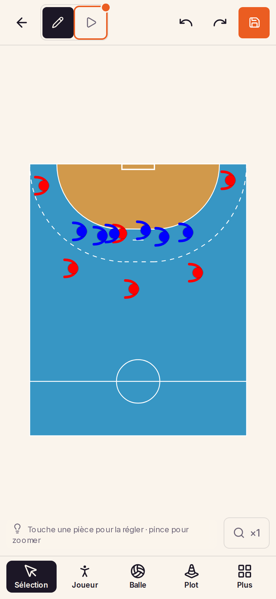

Placer et orienter les joueurs par poste
Étude pour la fiche du même nom, au tableau Produit. Toucher le terrain y pose un « + » ; le toucher ouvre la mise en place : une défense ou une attaque devant le but le plus proche, une colonne de joueurs ou un tas de ballons à l'endroit touché. La mise en place remplace les modèles. Chaque joueur porte son poste dans sa bulle, se retourne d'une touche et garde le regard vers le jeu.
Aujourd'hui

- Une 0-6 coûte une vingtaine de gestes. Six touches pour poser, puis pour chaque joueur une touche et un tour de poignée pour l'orienter, souvent un glissé pour le placer.
- Rien ne dit qui joue où. Celui qui relit la séance d'un collègue devine l'arrière gauche et le pivot.
- Tous regardent la touche. Un joueur posé ne regarde jamais un but ; la défense est à retourner entière.
- La même 0-6 change de forme d'un schéma à l'autre. Chacun la place à l'œil.
Mettre en place ici
La maquette se touche, ou se clique, comme l'éditeur. Elle passe d'un appareil à l'autre en gardant le schéma.
À essayer
- Sur le terrain vide, le « + » attend devant le but. Touche-le, puis Attaque contre 0-6.
- Touche un endroit vide, loin du but : le « + » s'y déplace, sans rien poser. Touche-le, puis Tas de ballons.
- Recommence ailleurs avec Colonne de joueurs : trois joueurs en file, ballon en main, tournés vers le but.
- Touche un joueur de la colonne, puis Poste : touche sa place sur le petit terrain. Il prend la couleur de son camp, le poste s'écrit dans sa tête, et son orientation auto se coche.
- Glisse-le vers l'avant : l'orientation auto le garde face au jeu. Retourner le met dos au but.
- Tourne-le à la poignée ronde du cadre : l'orientation auto se décoche, et il glisse désormais sans tourner. Elle se recoche dans Plus au téléphone, dans la liste des actions ailleurs.
- Choisis l'outil Joueur et pose-en trois : aucun n'est sélectionné, l'outil reste armé. Touche l'un d'eux : l'outil se désarme, et un appui sur le vide lâche le joueur au lieu d'en poser un autre.
Les gestes sont les mêmes sur tablette. À l'ordinateur, le clic droit ouvre la mise en place sans passer par le « + ».
Ce qui change dans l'éditeur
- Le point de pose. Avec l'outil Sélection, toucher un endroit vide du terrain y pose un « + », qui ne pose rien ; le toucher ouvre le menu de mise en place, ancré à cet endroit.
- La mise en place remplace les modèles. Plus d'étape d'options ni de groupe : une touche pose, et chaque pièce reste libre. Les équipes se posent devant le but le plus proche du « + », la colonne et le tas à l'endroit même.
- Le menu explique comment il marche : où chaque entrée arrive, ce qu'elle pose, vers où regardent les joueurs, et que rien n'est groupé ensuite.
- La ligne d'aide garde son texte et y ajoute la mise en place : « Touche une pièce pour la régler · touche le vide pour mettre en place · pince pour zoomer ». Le vide touché, elle dit « touche le + » ; à l'ordinateur, « clic droit pour mettre en place ».
- Plus perd sa section Mise en place. Modèles disparaît ; Tout effacer rejoint la section Disposition du terrain, renommée Terrain : elle accueillera aussi les terrains à venir, le beach ou la 3D du gardien.
- Le dessin du joueur ne change pas : la tête et l'arc des bras de l'éditeur, à la même taille ; le poste s'écrit dans la tête quand il est choisi.
- Poste et Retourner en tête des actions d'un joueur. Choisir un poste règle le joueur d'un coup : la couleur de son camp (rouge en attaque, noir en défense, jaune au gardien) et l'orientation auto.
- L'orientation auto n'est jamais cochée d'office : un joueur posé à la main ou dans une colonne se déplace sans tourner. Cochée par un poste (donc par une mise en place d'équipe), elle garde l'attaquant face au but et le défenseur face à l'attaque quand on le glisse. Une rotation à la poignée la décoche. Au téléphone, elle est dans Plus ; ailleurs, dans la liste des actions.
- L'outil armé jusqu'au geste, comme dans l'éditeur : chaque appui sur le vide pose une pièce, non sélectionnée ; toucher, glisser ou tourner une pièce désarme l'outil, et l'appui suivant sur le vide lâche la sélection, sans poser ni déplacer le « + ». Le « + » ne paraît qu'outil désarmé, rien de sélectionné.
Le menu de mise en place
Cinq entrées, sans variante. Le nombre de ballons, la couleur ou la longueur d'une colonne se règlent ensuite sur les pièces elles-mêmes, comme pour n'importe quel joueur ou ballon. Le menu porte ces explications en petit : sous chaque entrée ce qu'elle pose, sous chaque titre où elle arrive et vers où regardent les joueurs.
| Entrée | Ce qui se pose | Où | Aujourd'hui |
|---|---|---|---|
| Défense 0-6 | Six défenseurs, 1, 2, 3, 3, 2, 1, face à l'attaque | Devant le but le plus proche du « + » | Nouveau |
| Attaque placée | Les six postes, face au but | Devant le but le plus proche du « + » | Nouveau |
| Attaque contre 0-6 | Les douze | Devant le but le plus proche du « + » | Nouveau |
| Colonne de joueurs | Trois joueurs en file, un ballon en main droite, face au but | À l'endroit du « + » | Le modèle « Colonne de joueurs », ses options en moins |
| Tas de ballons | Six ballons serrés | À l'endroit du « + » | Le modèle « Réserve de ballons », ses options en moins |
Les moments clés
Le joueur, le placement, le regard
Le joueur de l'éditeur, son poste dans la tête
Le dessin reste celui de l'éditeur : la tête pleine et l'arc des bras, ouvert devant le joueur. Seule la tête grandit légèrement, d'un sixième, pour que le poste s'y lise ; les bras ne bougent pas. Le poste s'écrit en blanc dans la tête et reste droit quand le joueur tourne. Même forme, même taille avec ou sans poste : un schéma mêlant joueurs nommés et anonymes reste homogène, et les schémas enregistrés ne changent presque pas d'allure.
À l'échelle du téléphone, la tête mesure 17 px au lieu de 14 : un chiffre de la défense s'y écrit à 11 px, un poste de trois lettres à 7 px. C'est encore petit ; le zoom et la taille « grand » restent là pour qui en a besoin.
Le placement de référence
La même mise en place donne toujours le même placement. Celui-ci est une proposition, chiffrée pour être corrigée : gauche et droite se lisent du côté de l'attaque, les distances depuis la ligne de but. Ses deux règles sont dessinées : la ligne de la 0-6 à 6,6 m et l'arc des 14 m.
| Poste | Place |
|---|---|
| ALG, ALD | 1,1 m de la ligne de but, 0,9 m de la touche |
| ARG, ARD | sur l'arc des 14 m, écartés vers la touche : 11,5 m de la ligne de but, 2 m de la touche |
| DC | 14 m, dans l'axe |
| PVT | sur la ligne de la 0-6, entre le 2 et le 3 de gauche, dos au but |
| 0-6 | à 6,6 m des poteaux, presque collée à la zone ; un défenseur tous les 3,5 m environ |
| GB | 1 m devant sa ligne, dans l'axe ; un poste qu'on choisit, jamais posé par la mise en place |
Le regard
- L'attaquant regarde le centre du but, l'ailier compris, qui le regarde depuis son coin et non la ligne de fond.
- Le pivot tourne le dos au but : au contact de la défense, il regarde ses arrières.
- Le défenseur et le gardien tournent le dos au but, donc regardent l'attaque.
- Un joueur sans poste, posé à la main ou dans une colonne, regarde le but le plus proche, comme un attaquant.
- Le regard suit le jeu tant que l'orientation auto est cochée, ce que fait le choix d'un poste : un 3 avancé en 1-5 reste face à l'attaque. Retourner le met dos au but, et l'option le garde ainsi.
- Le tourner à la poignée décoche l'option : on a donné un regard à la main, il ne doit plus bouger tout seul. Décoché, le joueur glisse sans tourner ; recocher le remet face au jeu.
Trois règles
- Une seule défense, la 0-6. La 1-5 et la 2-4 se font en glissant un ou deux défenseurs.
- Une mise en place ne double jamais un poste déjà présent devant ce but : poser l'attaque deux fois ne crée pas douze attaquants.
- La notation est française : 0-6, 1-5, 2-4, et 1, 2, 3 de l'extérieur vers le centre.
Sur tablette et ordinateur
Le « + » se pose de la même façon partout. Le menu s'ouvre à côté de lui, du côté où il a la place, et son titre nomme le but visé quand le terrain en a deux. L'éditeur garde ses dispositions : la bande de la tablette tenue droite, le tout visible de la tablette couchée et du plein écran, l'éditeur dans la page de l'entraînement.
Tablette tenue droite
- Le menu s'ouvre à droite du « + », ou à sa gauche s'il est trop près du bord.
- Poste ouvre une feuille. Tous les outils ne parle plus de mise en place : Tout effacer y rejoint la section Terrain.
Tablette couchée, et plein écran à l'ordinateur
- Sur terrain entier, le but visé dépend de la moitié : un « + » à droite du milieu pose l'équipe devant le but de droite, et le menu le dit.
- Plus, en bas du rail d'outils, ne garde que la section Terrain, avec Tout effacer ; Poste, en tête du rail de droite, ouvre le petit terrain, à plat lui aussi.
Ordinateur, dans la page de l'entraînement
- Le clic droit ouvre le menu tout de suite, à l'endroit cliqué ; le clic gauche pose le « + », comme au doigt.
- Ici, une colonne posée près du milieu : ses joueurs regardent le but de gauche, sans poste ni orientation auto.
Forces
- Un seul geste pour tout ce qui se pose en bloc : équipes, colonnes, tas de ballons.
- Le geste se montre. Le « + » attend devant le but sur un schéma vide, puis paraît là où l'on touche.
- Un concept de moins. Les modèles, leur étape d'options et leur groupe s'effacent devant la mise en place, et Plus perd une section.
- Les joueurs se lisent pareil, avec ou sans poste.
- Passer d'une 0-6 à une 1-5 ne demande que de glisser : personne n'est à retourner après coup.
Limites
- Toucher le vide fait apparaître le « + ». Un appui distrait ne pose rien, mais le montre.
- La mise en place ne passe que par le terrain. Sans entrée dans Plus, qui ne pense pas à toucher le vide compte sur le « + » du schéma vide et sur la ligne d'aide.
- Sans options, une colonne de quatre ou un tas de dix se font en dupliquant ou en supprimant après la pose.
- Un poste de trois lettres s'écrit à 7 px au téléphone, même avec la tête un peu agrandie : il se devine plus qu'il ne se lit sans zoom. Et tous les joueurs, nommés ou non, ont désormais une tête un peu plus grosse qu'aujourd'hui.
- Un joueur qui tourne tout seul pendant qu'on le glisse peut surprendre. L'option « Orientation auto » le dit et se décoche à la première rotation manuelle, mais c'est un réglage de plus par joueur, enregistré dans le schéma.
- Nommer un joueur demande trois touches : le joueur, Poste, sa place.
Par étapes
Chaque étape se livre seule et sert tout de suite. L'effort total est élevé, mais la suppression de l'assistant des modèles en rend une part.
- Le point de pose, à la place des modèles. Un appui sur le vide qui déplace le « + », un appui sur lui qui ouvre le menu, ancré à un point de la scène qui suit le zoom, le cadrage et le quart de tour du téléphone ; le clic droit à l'ordinateur. Un état d'interface, rien dans le schéma. Le menu ne propose d'abord que la colonne et le tas : les générateurs des modèles restent, sans options ni groupe, et l'assistant (choix, options, aperçu) disparaît. Plus perd sa section Mise en place, Tout effacer rejoint la disposition du terrain, la ligne d'aide apprend le geste.
- Le poste dans la tête et les équipes. Le poste écrit dans la tête du joueur, sa couleur de camp, la table des placements ; la défense, l'attaque et les deux rejoignent le menu.
- Poste et Retourner. Les deux actions en tête du dock d'un joueur, et le petit terrain où l'on touche sa place.
- L'orientation auto. En dernier : c'est le comportement le plus surprenant, il mérite d'être essayé à part. Une option par joueur, cochée par le choix d'un poste, enregistrée avec lui ; le regard se recalcule à chaque déplacement tant qu'elle l'est, et la rotation à la poignée la décoche.
Ce qu'on garde de HandBoard
La référence de la fiche, handboard.fr/board, outils latéraux affichés, a les bonnes idées : le poste écrit dans la bulle et une équipe entière en un geste. La proposition les reprend.
Elle laisse de côté la liste de cinq défenses (6-0, 5-1, 3-2-1, 3-3, 4-2), qui alourdit l'outil ; le placement à l'œil, où le pivot se pose sur les deux défenseurs centraux ; la notation internationale ; et l'orientation qui se réduit à un petit trait, tournée vers le but pour tous, défenseurs compris.
À trancher
- Le placement des attaquants : demi-centre et arrières sur l'arc des 14 m, arrières écartés à 2 m de la touche, ailiers dans leur coin, pivot dos au but sur la ligne de la 0-6, entre le 2 et le 3 de gauche. Est-ce la place de départ attendue sur un schéma, ou faut-il rapprocher l'attaque des 9 m ? Au référent métier de corriger le tableau, chiffres à l'appui.
- Les places de la défense : la 0-6 à 6,6 m des poteaux, un défenseur tous les 3,5 m environ.
- Les sigles des ailiers : ALG et ALD, ou AG et AD ? Aucune notation officielle n'a été trouvée ; ARG, ARD, DC et PVT sont, eux, d'usage courant. ALG et ALD ont trois lettres comme les arrières et ne se confondent pas avec eux ; AG et AD sont plus courts. Au référent métier de dire ce qu'on écrit au comité.
- Les couleurs posées : attaque en rouge, défense en noir, lisible sur le parquet bleu comme à l'impression ?
- Le gardien : un poste qu'on choisit, jamais posé par la mise en place, en attendant un « effectif complet » ?
Tranché
- La section du menu Plus s'appelle « Terrain » : elle reçoit Tout effacer et recevra les autres terrains, beach ou 3D du gardien.
- Les nombres de la mise en place restent ceux de la maquette : trois joueurs par colonne, six ballons par tas.
- Les haies, échelles et séparations restent hors de cette fiche : leur sens dépend de l'exercice, pas du but.
- La tête du joueur grandit légèrement, pas les bras, pour que le poste se lise ; pour tous les joueurs, nommés ou non.